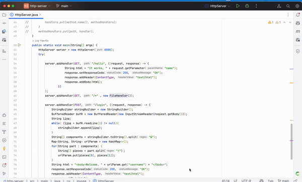
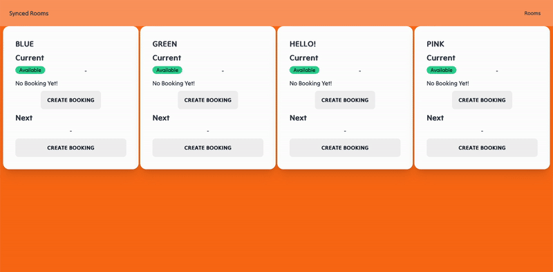
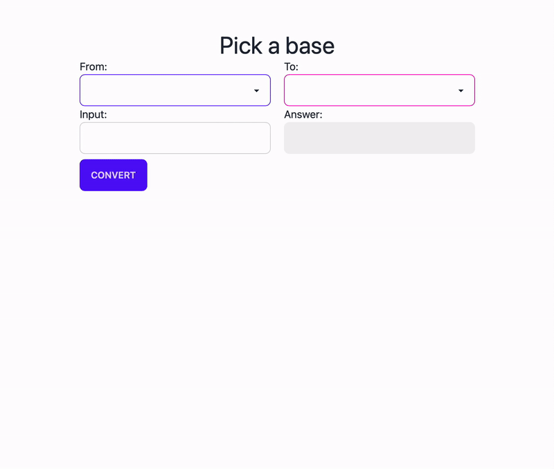

I was always fascinated by how HTTP server works, and this a small project to let me how build one from scratch with Java
Build with: Core Java - Socket, BufferedReader, OutputStream
This is a paid project for a cafe in Montreal, distributed synchronized timer
I tackled the problem of websocket for real time distributed timer and avoid memory leak with frontend state management.
Build with: SvelteKit, TailwindCSS, Firebase
To Recreate a step by step of radix conversion Binary, Decimal, Octal, and Hexadecimal
This project help me to learn about using both Object Oriented Programming and Functional Programming
Build with: SvelteKit, TailwindCSS
